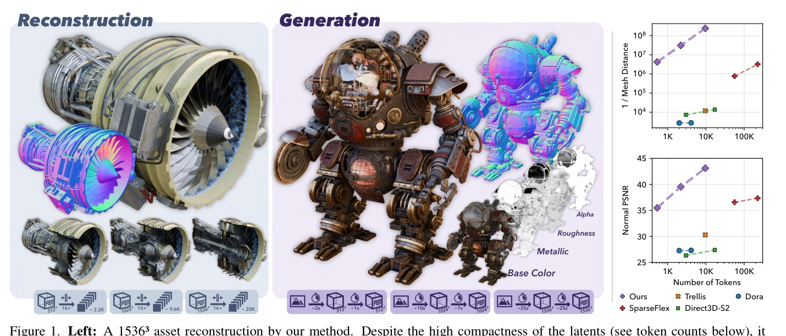
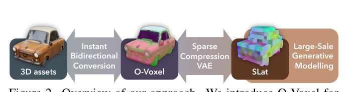
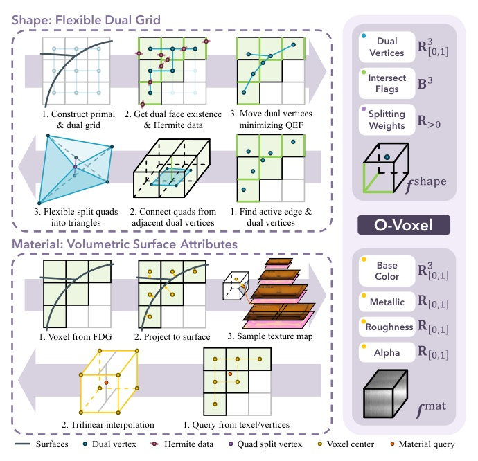
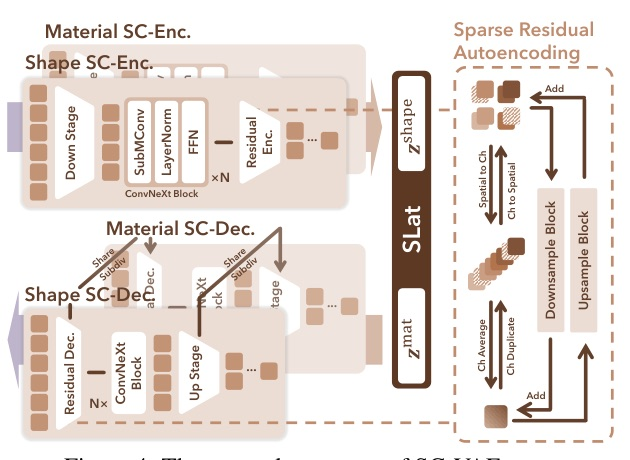
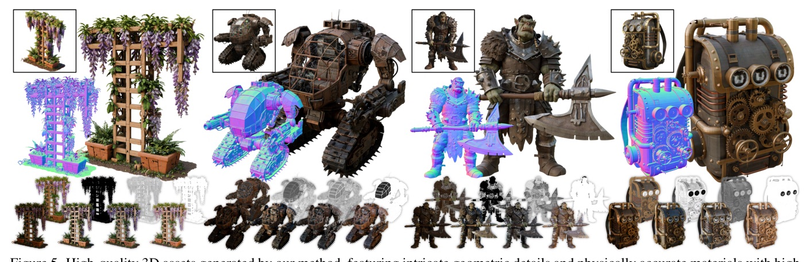
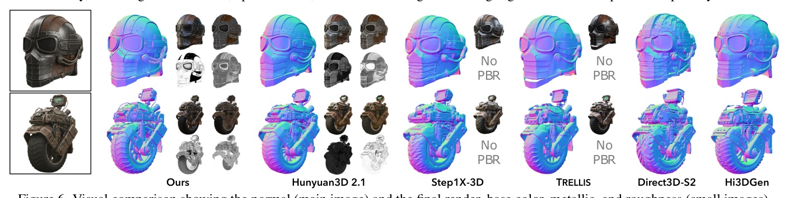
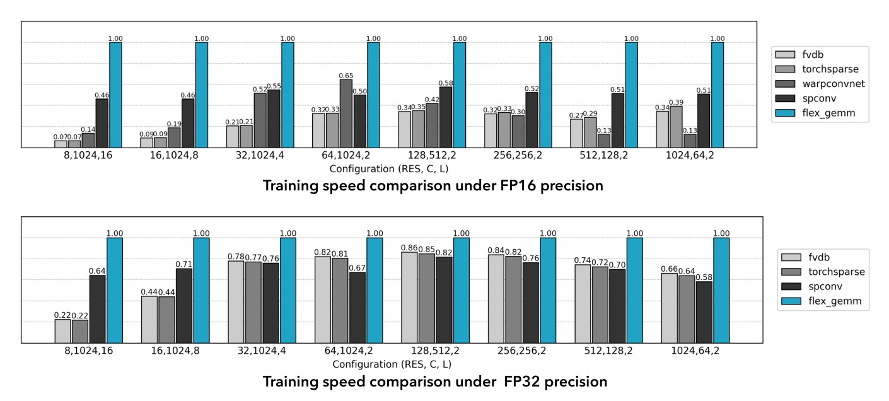
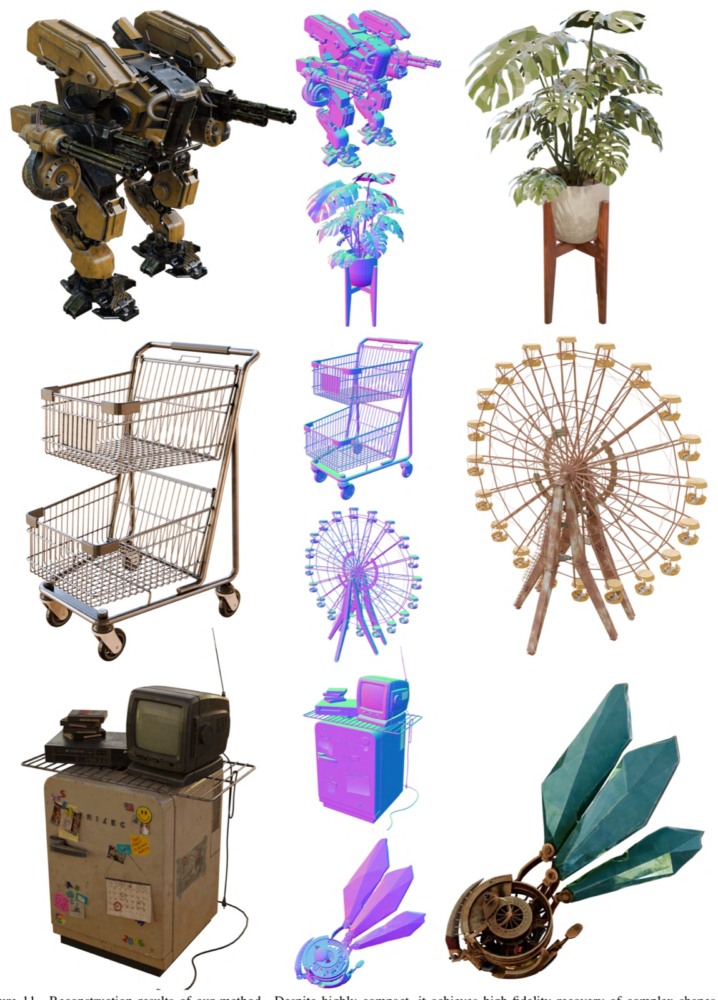
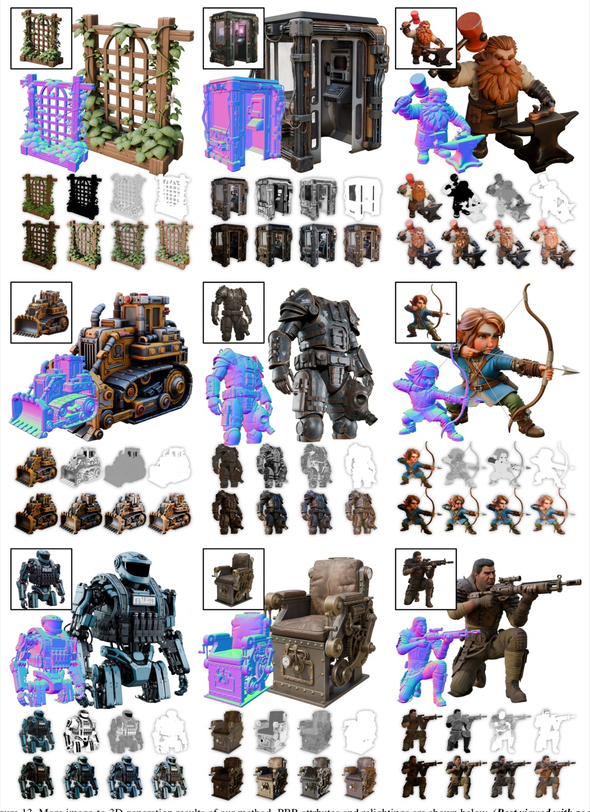

TRELLIS.2 把 image-to-3D 的主戰場從後處理貼圖拉回 native 3D latent representation：O-Voxel 存拓撲與 PBR 材質，SC-VAE 壓到大型 DiT 可直接生成的 token 數。

不是先把 3D 做出來再補貼圖。
它把 幾何、拓撲、PBR 材質一起壓進 native sparse latent，讓 vanilla sparse DiT 可以直接生成完整資產。
Sunday deck 依 skill 走「熱門 repo + 官方技術來源」；venue 誠實標 technical report / arXiv，而不是硬說頂會 accepted。


Opacity 讓 translucent / glass-like assets 進入表示法；這是許多前作沒有的材料能力。

DINOv3-L 提供 image conditioning；DiT 採 AdaLN-single + RoPE。
| part | data / protocol | compute / metric |
|---|---|---|
| SC-VAE train | Filtered TRELLIS-500K from Objaverse-XL, ABO, HSSD | 16 H100, batch 128 |
| Generator train | ~800K assets + TexVerse; 16 rendered views / asset | 32 H100, batch 256 |
| Reconstruction | Toys4K + 90 recent Sketchfab Featured assets | MD/F1, CD/F1, Normal PSNR/LPIPS |
| Generation | 100 AI-generated prompts; ~40 participants user study | CLIP, CLIP-N, ULIP-2, Uni3D, Pref% |
| method | tokens | dec | Toys4K MD↓ | Toys4K PSNR↑ | Sketchfab MD↓ | Sketchfab PSNR↑ |
|---|---|---|---|---|---|---|
| TRELLIS | 9.6K | 0.108s | 85.07 | 30.29 | 49.20 | 24.31 |
| SparseFlex 1024 | 225K | 3.21s | 0.3132 | 37.34 | 0.7593 | 32.12 |
| Ours 512 | 2.2K | 0.077s | 0.0323 | 39.54 | 0.1572 | 31.00 |
| Ours 1024 | 9.6K | 0.301s | 0.0042 | 43.11 | 0.0170 | 35.26 |
| method | CLIP↑ | CLIP-N↑ | ULIP-2↑ | Uni3D↑ | Pref%↑ | Pref-N%↑ |
|---|---|---|---|---|---|---|
| TRELLIS | 0.876 | 0.748 | 0.470 | 0.414 | 6.40% | 2.82% |
| Hunyuan3D 2.1 | 0.869 | 0.753 | 0.474 | 0.427 | 13.3% | 7.51% |
| Step1X-3D | 0.875 | 0.738 | 0.464 | 0.411 | 11.8% | 0.469% |
| Ours | 0.894 | 0.758 | 0.477 | 0.436 | 66.5% | 69.0% |


Sparse residual autoencoding 不是 implementation detail。
拿掉它，32x compression 下 MD 從 1.405 變成 7.394。
| setting | tokens | dec ms↓ | MD↓ | F1↑ | PSNR↑ | LPIPS↓ |
|---|---|---|---|---|---|---|
| SC-VAE f16c32 | 503 | 28.6 | 1.032 | 0.312 | 27.26 | 0.072 |
| w/o Residual AE | 503 | 28.7 | 1.747 | 0.268 | 26.73 | 0.081 |
| w/o Opt. ResBlock | 503 | 29.6 | 1.198 | 0.285 | 26.67 | 0.083 |
| SC-VAE f32c128 | 118 | 33.9 | 1.405 | 0.273 | 26.65 | 0.081 |
| f32c128 w/o Residual AE | 118 | 34.0 | 7.394 | 0.192 | 25.01 | 0.102 |

Recent large 3D generation models predominantly leverage iso-surface fields ... which have intrinsic limitations in handling open surfaces, non-manifold geometry, and enclosed interior structures.
既有大型 3D 生成多依賴 iso-surface field，對開放面、非流形和內部封閉結構有表示瓶頸。 §1 p.2
Our approach encodes a fully textured asset with 1024³ resolution into only ∼9.6K latent tokens...
1024³ 完整貼圖資產壓到約 9.6K latent tokens，是高解析生成效率的核心。 §1 p.2
Inference remains highly efficient: it takes only ∼3s for 512³ fully-textured assets generation, ∼17s for the 1024³ resolution, and ∼60s for the 1536³ resolution on a NVIDIA H100 GPU.
生成 512³/1024³/1536³ 完整貼圖資產約需 3/17/60 秒（H100）。 §1 p.2
O-Voxel’s representation power is bounded by its spatial resolution.
這個方法的失敗邊界仍然是 voxel 尺度；比 voxel 更細或近距雙面會 alias/材質平均。 Limitations p.20


TRELLIS.2 的價值在於把 3D asset 生成拆回「native representation + compression + scalable generator」三件事。最值得抄的不是 4B，而是 O-Voxel / SC-VAE 對失敗邊界的重新定義。